ProPolar: Progressive Polar Decomposition
for Implicit
Neural Representations
Abstract
Implicit neural representations (INRs) capture global low-frequency structure during the early stage of training and then refine localized high-frequency details, afterwards. However, standard optimizers are agnostic to the coarse-to-fine learning behavior of INRs. Such optimizers accumulate a gradient matrix in momentum buffer and retain components misaligned with the dominant low-frequency directions in the early stage. We propose a progressively growing rank scheduler and a rank-aware learning-rate scheduler for enhancing a subspace-based momentum optimization, where a momentum matrix is updated within a low-rank subspace. The rank schedule expands the subspace during training, and the scheduler holds the peak learning rate through rank growth so that the added subspace contributes to fine-detail recovery. Experiments on image fitting, single-image super-resolution (SISR), and neural radiance field optimization show that the proposed method improves convergence and peak reconstruction quality over competitive optimizers. The largest gains appear in the high-frequency refinement stage, mirroring the coarse-to-fine progression that the rank schedule targets. A significant study on hyperparameter optimization (HPO) on NeRF further confirms that these gains persist under matched search budgets.
Why ProPolar? Fixed Rank in Coarse-to-Fine Training
INR training follows a coarse-to-fine progression. Global low-frequency structure forms first, and high-frequency detail follows. Capacity demand grows with training, so a low-rank update subspace suits the early stage and a high-rank subspace suits the later stage.
Standard optimizers keep one update representation for the whole run.
They are agnostic to the training stage. A full-rank momentum matrix accumulates every gradient component, including components misaligned with the dominant low-frequency directions in the early stage. A fixed rank assigns capacity to less informative directions early and constrains the update subspace during detail refinement.
ProPolar aligns the update subspace with the training stage. The subspace rank starts from a data-dependent value and grows by a cosine schedule. A rank-aware learning-rate schedule holds the peak step size through rank growth so that the added directions contribute to fine-detail recovery.
How ProPolar Works
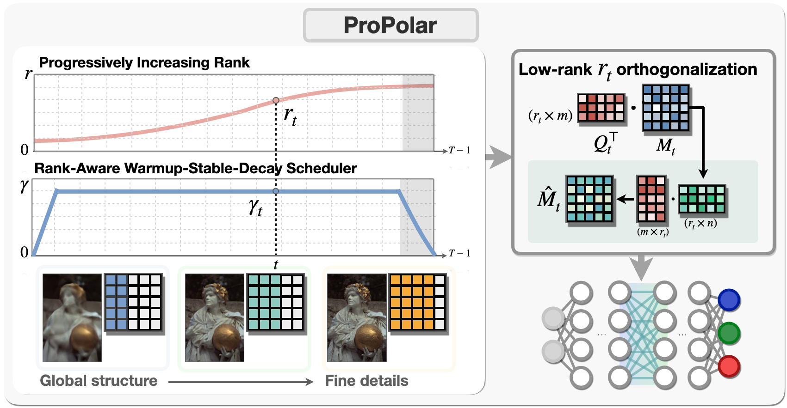
ProPolar updates every hidden-layer weight matrix \(W\in\mathbb{R}^{m\times n}\) with the five steps below and applies Adam to non-matrix parameters.
Step 1. Accumulate Nesterov momentum.
For each hidden-layer matrix, ProPolar keeps a momentum matrix \(M_t\) with coefficient \(\beta\).
Step 2. Set the rank for this iteration.
During the first \(T_0\) iterations, the rank \(r_t\) is the smallest \(k\) whose spectral energy \(E_t(k)\) reaches the threshold \(\rho\), and \(r^{\mathrm{init}} = \lceil \operatorname{median}(r_0,\dots,r_{T_0-1}) \rceil\). The rank then grows from \(r^{\mathrm{init}}\) to \(r^{\max}\) over \(T_g\) iterations by a cosine schedule and stays at \(r^{\max}\) afterward.
Step 3. Build a low-rank basis.
A Gaussian sketch \(\Omega_t\) and a thin QR decomposition give an orthonormal basis \(Q_t\) for the dominant column space of \(M_t\). By randomized SVD analysis, \(Q_tQ_t^{\top}M_t\) approximates the best rank-\(r_t\) truncation of \(M_t\).
Step 4. Orthogonalize in the reduced space.
Five Newton–Schulz iterations approximate the polar factor \(\mathcal{P}\) of the \(r_t\times n\) reduced matrix, and \(Q_t\) maps the result back to the parameter space. Full-space orthogonalization amplifies every singular direction equally, including tail directions misaligned with the dominant update subspace. The reduced polar factor restricts the update to the span of \(Q_t\).
Step 5. Hold the peak learning rate until rank saturation.
The rank-aware warmup-stable-decay schedule, raWSD, sets \(\eta_t = \gamma_t\,\eta_{\max}\). Decay starts after all tracked layers reach \(r^{\max}\), so directions added during rank growth receive full-size steps.
Explore the two schedules.
Move the sliders to see how the decay start follows rank saturation. Before \(T_0\) the rank follows the energy threshold, and the plot draws it at \(r^{\mathrm{init}}\).
Rank saturates at iteration . Learning-rate decay starts at iteration .
Illustrative settings with T = 5,000, rmax = 256, and γmin = 0.
Spectral Insight
Two measurements on image overfitting motivate the rank schedule, and two ablations test its design.
Effective rank grows late in training.
The normalized entropy effective rank of the momentum matrix \(M_t\) and the update \(\Delta W_t = W_{t+1} - W_t\) stays low for most of training and rises in later iterations. A low value means that a few leading singular values account for most of the spectrum.
A low-rank approximation suffices in the early stage, and more singular directions become non-negligible later. This pattern matches a rank that grows over training.
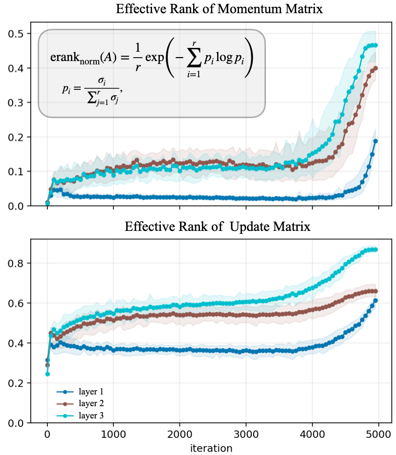
Head directions carry fine detail.
Let \(\bar M_t = U_tV_t^{\top}\) denote the full polar factor of \(M_t\) and \(\bar M_{t,k} = U_{t,k}V_{t,k}^{\top}\) its rank-\(k\) head. With \(k = 128\), head-only updates reduce low-frequency residual energy by orders of magnitude and continue to reduce mid- and high-frequency residuals. Tail-only updates stay near the initial level in mid and high bands. Update components for fine-detail recovery concentrate in the head.
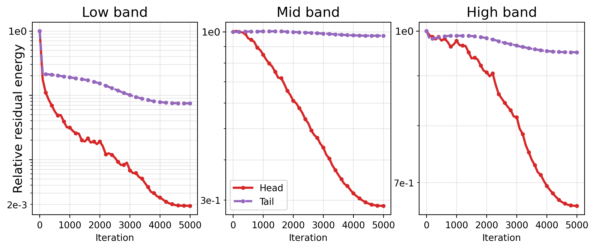
Increasing rank gives the best reconstruction.
Four rank schedules share the image overfitting setting. Increasing rank reaches 27.12 dB, followed by fixed rank at 26.58 dB, full rank at 26.47 dB, and decreasing rank at 26.06 dB.
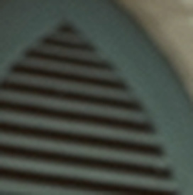
The second row magnifies the region in the red box.
raWSD pairs with rank growth.
With raWSD, ProPolar improves over its non-WSD counterpart in all eight NeRF scenes. Muon with WSD drops in six of eight scenes. Holding the peak step size during rank growth matches the learning-rate schedule to the expanding subspace.
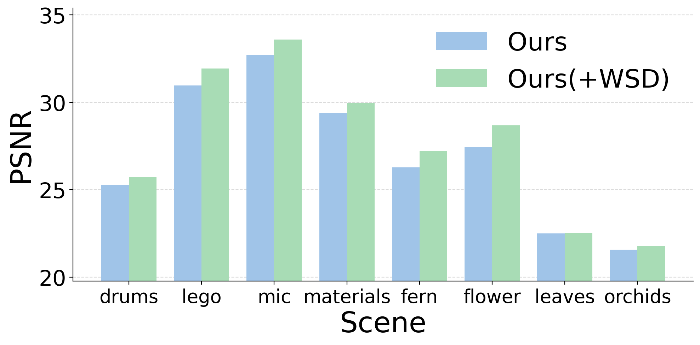
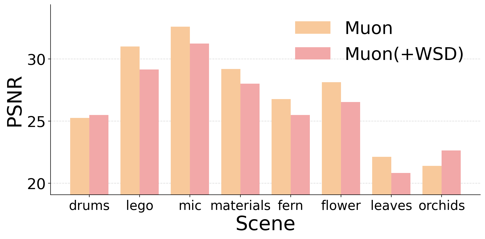
Results
ProPolar changes the optimizer and keeps the architecture and training configuration of each baseline. Light-blue cells mark ProPolar. Bold marks the best value and underline marks the second best within each comparison.
Image fitting on Kodak24
Mean over 24 images.
| Model | Optimizer | PSNR ↑ | SSIM ↑ | LPIPS ↓ |
|---|---|---|---|---|
| ReLU MLP | Adam | 22.55 | 0.5404 | 0.5835 |
| ProPolar | 28.70 | 0.7855 | 0.3417 | |
| SIREN | Adam | 33.67 | 0.9104 | 0.0754 |
| ProPolar | 35.05 | 0.9320 | 0.0751 |
Super-resolution ×4 on DIV2K
PSNR ↑ across INR architectures.
| Model | Adam | Muon | ProPolar |
|---|---|---|---|
| ReLU MLP | 19.65 | 22.01 | 23.47 |
| SIREN | 24.32 | 24.73 | 24.73 |
| WIRE | 23.97 | 24.62 | 24.68 |
| FINER | 25.23 | 25.19 | 25.45 |
Neural radiance fields
| Method | Fern | Flower | Fortress | Horns | Leaves | Orchids | Room | T-Rex | Avg. |
|---|---|---|---|---|---|---|---|---|---|
| Adam | 26.38 | 27.47 | 31.74 | 27.79 | 21.92 | 21.10 | 31.96 | 26.90 | 26.91 |
| MoFaSGD | 26.24 | 27.30 | 31.42 | 27.32 | 21.56 | 20.98 | 32.01 | 26.71 | 26.69 |
| Muon | 26.84 | 28.12 | 32.21 | 28.60 | 22.16 | 21.42 | 33.17 | 27.79 | 27.53 |
| ProPolar | 27.22 | 28.68 | 32.82 | 29.02 | 22.54 | 21.80 | 33.72 | 28.44 | 28.03 |
| Adam | 0.8322 | 0.8566 | 0.9036 | 0.8702 | 0.7737 | 0.7135 | 0.9515 | 0.9000 | 0.8501 |
| MoFaSGD | 0.8200 | 0.8435 | 0.8946 | 0.8489 | 0.7454 | 0.6934 | 0.9481 | 0.8884 | 0.8352 |
| Muon | 0.8507 | 0.8777 | 0.9184 | 0.8934 | 0.7880 | 0.7318 | 0.9604 | 0.9175 | 0.8672 |
| ProPolar | 0.8584 | 0.8880 | 0.9270 | 0.8984 | 0.8014 | 0.7508 | 0.9629 | 0.9280 | 0.8768 |
Scene-level results at 100K iterations with the original hyperparameter configuration of vanilla NeRF.
| Method | Chair | Drums | Ficus | Hotdog | Lego | Materials | Mic | Ship | Avg. |
|---|---|---|---|---|---|---|---|---|---|
| Adam | 32.57 | 25.08 | 28.02 | 35.40 | 30.23 | 28.32 | 32.04 | 28.47 | 30.02 |
| MoFaSGD | 31.57 | 24.76 | 27.45 | 34.77 | 29.90 | 28.51 | 31.02 | 28.17 | 29.26 |
| Muon | 33.22 | 25.22 | 28.28 | 36.23 | 30.95 | 29.19 | 32.64 | 28.87 | 30.58 |
| ProPolar | 34.28 | 25.72 | 29.30 | 37.36 | 31.94 | 29.95 | 33.59 | 29.57 | 31.46 |
| Adam | 0.9702 | 0.9217 | 0.9566 | 0.9757 | 0.9536 | 0.9483 | 0.9742 | 0.8576 | 0.9447 |
| MoFaSGD | 0.9600 | 0.9165 | 0.9497 | 0.9719 | 0.9488 | 0.9501 | 0.9688 | 0.8569 | 0.9374 |
| Muon | 0.9747 | 0.9242 | 0.9602 | 0.9790 | 0.9622 | 0.9585 | 0.9775 | 0.8683 | 0.9506 |
| ProPolar | 0.9791 | 0.9304 | 0.9669 | 0.9817 | 0.9681 | 0.9628 | 0.9800 | 0.8773 | 0.9558 |
Scene-level results at 100K iterations with the original hyperparameter configuration of vanilla NeRF.
| Method | Chair | Drums | Ficus | Hotdog | Lego | Materials | Mic | Ship | Avg. |
|---|---|---|---|---|---|---|---|---|---|
| AdamW | 35.24 | 25.64 | 29.50 | 37.75 | 33.07 | 30.55 | 34.35 | 29.95 | 32.01 |
| Muon | 34.68 | 25.51 | 29.17 | 37.63 | 32.45 | 30.25 | 34.30 | 29.78 | 31.72 |
| ProPolar | 35.58 | 25.71 | 29.67 | 38.25 | 33.56 | 31.12 | 34.91 | 30.28 | 32.39 |
| AdamW | 0.9829 | 0.9292 | 0.9675 | 0.9831 | 0.9743 | 0.9653 | 0.9814 | 0.8784 | 0.9578 |
| Muon | 0.9799 | 0.9239 | 0.9658 | 0.9818 | 0.9693 | 0.9620 | 0.9807 | 0.8746 | 0.9548 |
| ProPolar | 0.9839 | 0.9289 | 0.9698 | 0.9848 | 0.9770 | 0.9691 | 0.9838 | 0.8866 | 0.9605 |
Synthetic NeRF scenes at 200K iterations.
| Method | Chair | Drums | Ficus | Hotdog | Lego | Materials | Mic | Ship | Avg. |
|---|---|---|---|---|---|---|---|---|---|
| Adam | 29.41 | 21.90 | 26.95 | 32.19 | 28.24 | 25.35 | 29.69 | 24.27 | 27.25 |
| Muon | 28.79 | 21.73 | 21.91 | 32.37 | 27.02 | 25.80 | 24.13 | 25.04 | 25.84 |
| ProPolar | 30.04 | 23.08 | 27.01 | 33.83 | 29.05 | 27.51 | 30.28 | 26.69 | 28.44 |
| Adam | 0.9373 | 0.8598 | 0.9317 | 0.9629 | 0.9284 | 0.8861 | 0.9642 | 0.8311 | 0.9127 |
| Muon | 0.9270 | 0.8813 | 0.8730 | 0.9555 | 0.9013 | 0.9095 | 0.9472 | 0.8101 | 0.9006 |
| ProPolar | 0.9420 | 0.8980 | 0.9405 | 0.9646 | 0.9338 | 0.9286 | 0.9689 | 0.8412 | 0.9272 |
Synthetic NeRF scenes under the 1-second training budget of Instant-NGP.
| Method | Chair | Drums | Ficus | Hotdog | Lego | Materials | Mic | Ship | Avg. |
|---|---|---|---|---|---|---|---|---|---|
| Fixed hyperparameters | |||||||||
| Adam | 32.57 | 25.08 | 28.02 | 35.40 | 30.23 | 28.32 | 32.04 | 28.47 | 30.02 |
| Muon | 33.22 | 25.22 | 28.28 | 36.23 | 30.95 | 29.19 | 32.64 | 28.87 | 30.58 |
| ProPolar | 34.28 | 25.72 | 29.30 | 37.36 | 31.94 | 29.95 | 33.59 | 29.57 | 31.46 |
| Tuned with TPE | |||||||||
| Adam | 32.93 | 25.20 | 28.33 | 37.35 | 30.61 | 28.37 | 32.62 | 28.51 | 30.49 |
| Muon | 34.19 | 25.73 | 29.30 | 37.40 | 31.66 | 29.55 | 33.64 | 29.48 | 31.37 |
| ProPolar | 34.37 | 25.61 | 29.30 | 37.48 | 32.03 | 29.95 | 33.71 | 29.64 | 31.51 |
| Fixed hyperparameters | |||||||||
| Adam | 0.9702 | 0.9217 | 0.9566 | 0.9757 | 0.9536 | 0.9483 | 0.9742 | 0.8576 | 0.9447 |
| Muon | 0.9747 | 0.9242 | 0.9602 | 0.9790 | 0.9622 | 0.9585 | 0.9775 | 0.8683 | 0.9506 |
| ProPolar | 0.9791 | 0.9304 | 0.9669 | 0.9817 | 0.9681 | 0.9628 | 0.9800 | 0.8773 | 0.9558 |
| Tuned with TPE | |||||||||
| Adam | 0.9702 | 0.9259 | 0.9568 | 0.9775 | 0.9552 | 0.9485 | 0.9750 | 0.8618 | 0.9464 |
| Muon | 0.9773 | 0.9317 | 0.9656 | 0.9821 | 0.9651 | 0.9597 | 0.9802 | 0.8813 | 0.9554 |
| ProPolar | 0.9793 | 0.9293 | 0.9666 | 0.9821 | 0.9688 | 0.9627 | 0.9804 | 0.8774 | 0.9558 |
Synthetic NeRF scenes at 100K iterations. Each optimizer receives 20 TPE trials, and the configuration with the highest validation PSNR is evaluated once on the test set. Averages in this tab are computed from the per-scene values.
Training cost
| Method | GPU memory, GB | Time per iteration, ms | Total time, s | Optimizer step, ms |
|---|---|---|---|---|
| Adam | 2.97 | 96.63 | 966.35 | 5.23 |
| Muon | 2.97 | 107.22 | 1072.16 | 19.75 |
| Shampoo, F = 10 | 4.57 | 166.86 | 1668.62 | 88.25 |
| Shampoo, F = 100 | 4.57 | 106.54 | 1065.44 | 28.00 |
| ProPolar | 2.97 | 112.70 | 1126.96 | 25.45 |
Lego scene with 1.19M trainable parameters, timed over 10K iterations after 50 warm-up iterations. Like Muon, ProPolar adds optimizer time over Adam through the polar step. GPU memory matches Adam.
The paper reports vanilla NeRF at 200K iterations and the TPE search spaces in the appendix.
Qualitative Comparison
Drag the divider to compare each baseline with ProPolar on the same scene. Zoom magnifies the region that the paper marks with a red box.
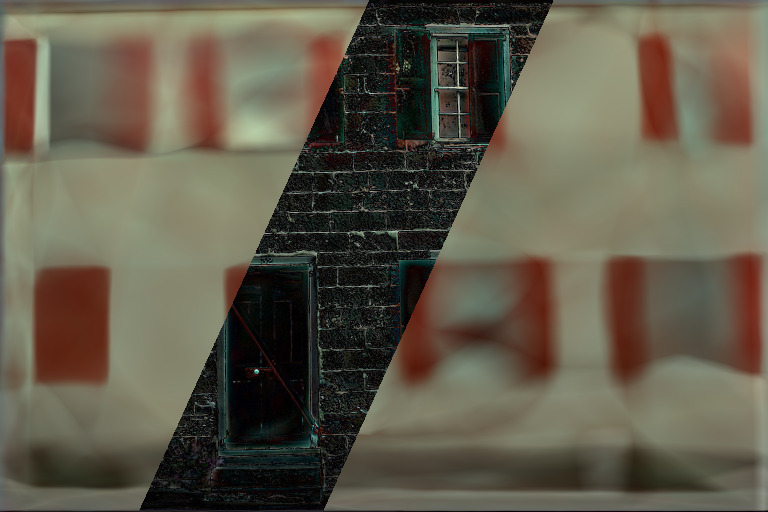
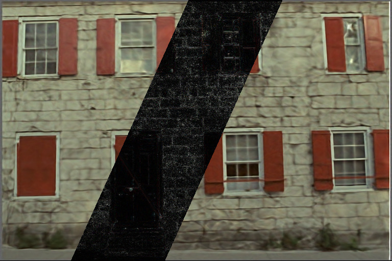
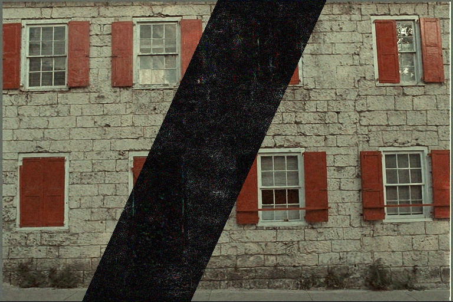
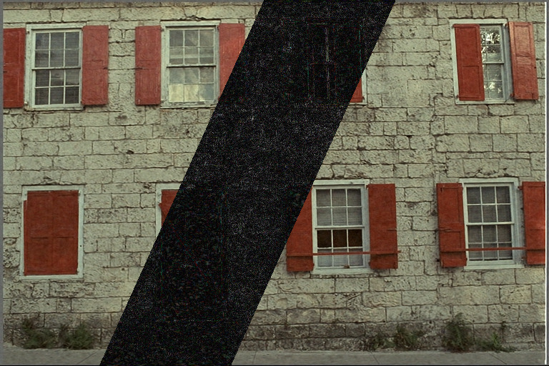
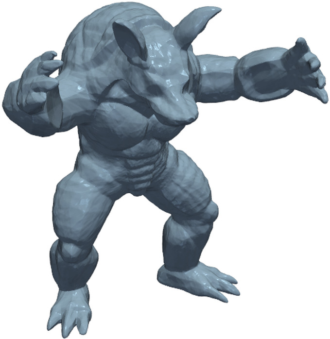
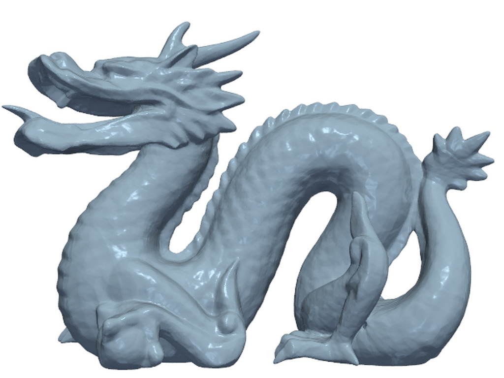
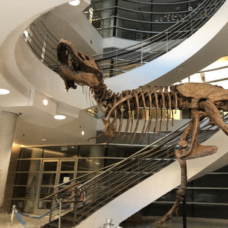
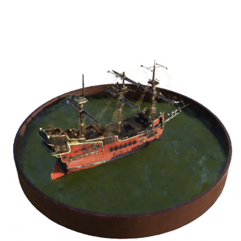
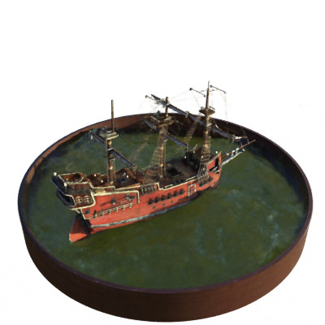
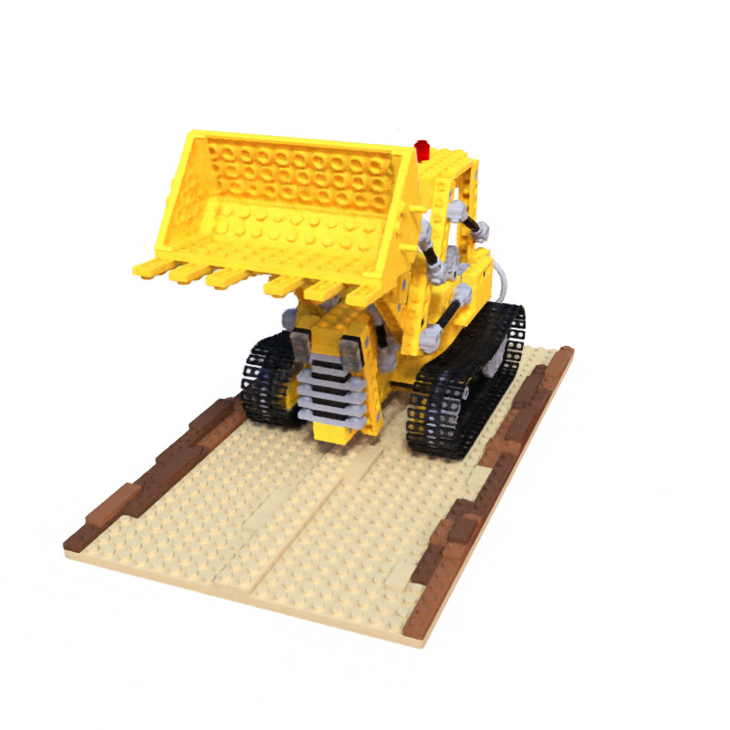
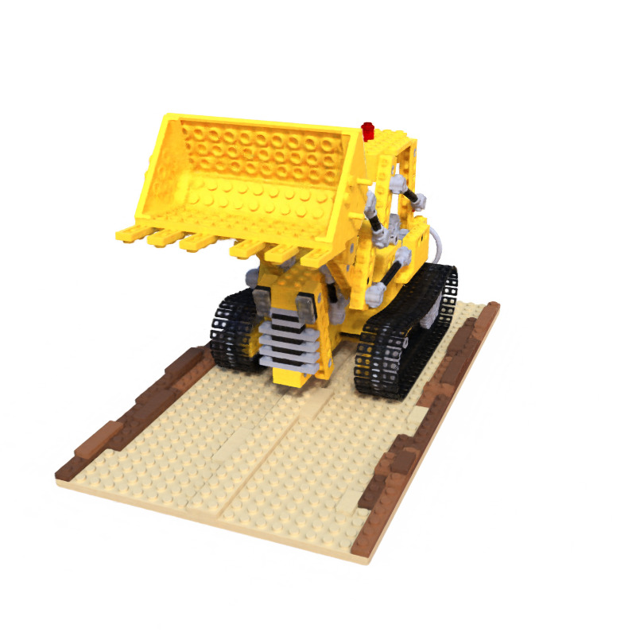
BibTeX
@inproceedings{kim2026propolar,
title = {{ProPolar}: Progressive Polar Decomposition for Implicit Neural Representations},
author = {Pureum Kim and Younggeon Ryu and Dongyoon Lee and Hae Beom Lee and Kyong Hwan Jin},
booktitle = {Advances in Neural Information Processing Systems},
year = {2026}
}